Capybara testing interact like your audience!
You've made a dope website, but how do you test it from an end-user's perspective? Checkout Capybara!
In short, Capybara is a ruby gem that allows developers to write tests that interact with a web application like a user. You can perform quality control and simulate user interaction by clicking buttons & links, filling in forms, and navigating through the site.
First, take a peek at some of the basic commands. For more commands, checkout out this cheatsheet.
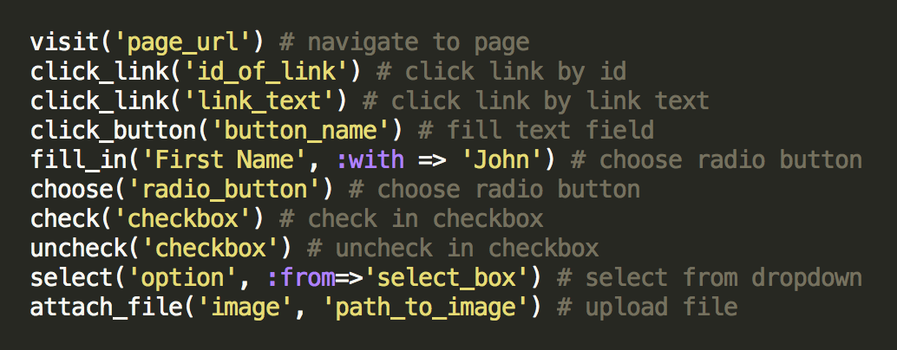
The image below shows what testing looks like in practice with a user story framework. In this example we are able to navigate to a page, click a link, fill in a form, submit the form. Then we verify our input using the Capybara specific test assertion "has_content."
Take special note of the within command, which is used to define the scope of the code you interact with. In this example, within uses a loop to reference only the form that has the css id of "edit form." This is especially important if you have multiple forms, links, or buttons on the same page.
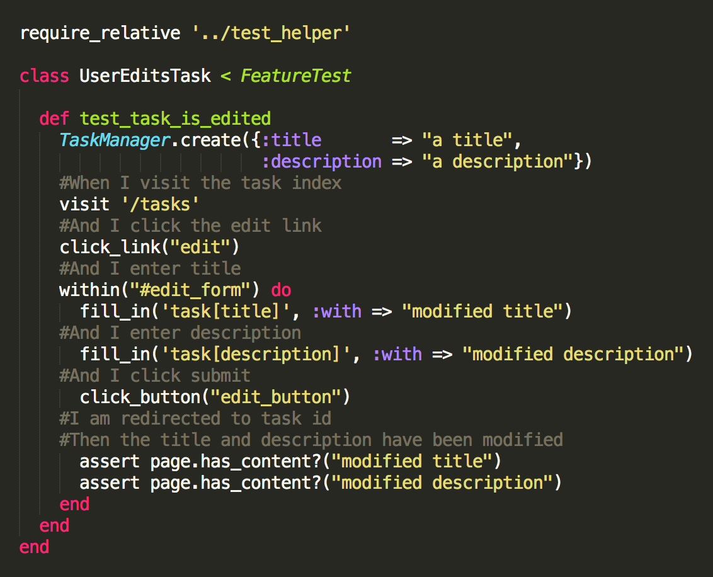
If you're still getting an Ambiguous match error, your first instinct should be to scope with greater specificity. Create a unique css identifier and use a within loop.
This is a more specific example of scoping from a different project. Notice how we find the ordered list (ol) with the id of #most_pop_referrers_list. Then we further specify that we want the list item's (li) nth-child(#), where # is the number of the list element. For example, 'ol#most_pop_referrers_list li:nth-child(1)' will scope the second element of the list. Then it will check for the turing url: "http://turing.io (2)"
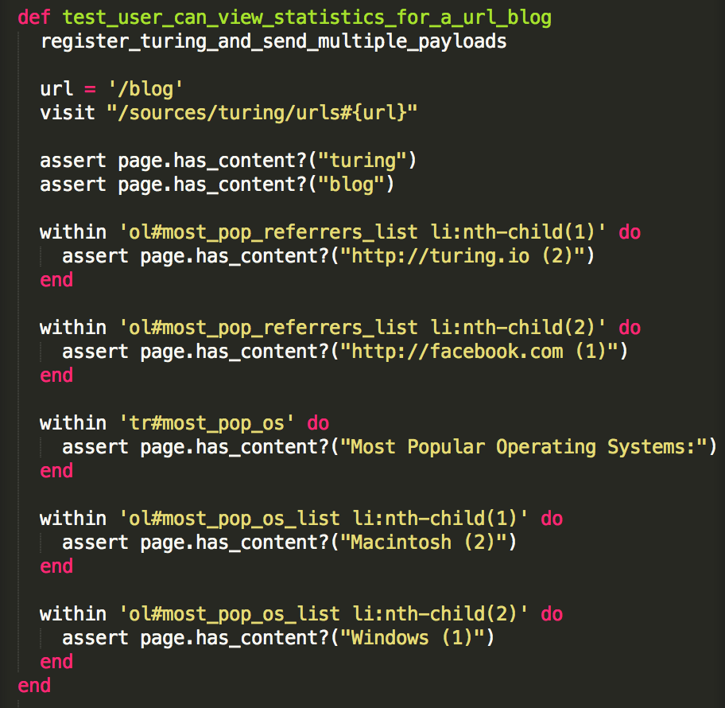
In terms of setup, make sure you have the Capybara gem installed and bundled. Define a class that inherits from Minitest, and include Capybara::DSL. Note that in the first test above, the UserEditsTask testing class inherits from FeatureTest as opposed to Minitest::Test. That's because we set it up so our FeatureTest inherits from Minitest, while including the Capybara::DSL.
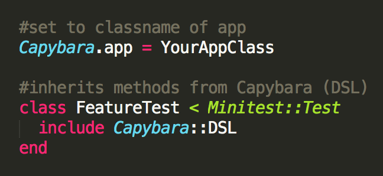
There's much more to explore with Capybara, but hopefully by now you understand that it can be a powerful tool for feature testing. If you're goal is a positive user experience, get to work with Capybara!
Shoulda Matchers Simplify Validation Tests
Are you sick of writing tests to validate your models, or just gifted with solid one-liners? Check out shoulda-matchers!
Shoulda matchers is a gem that allows developers to simplify validation testing with a new suite of testing methods called matchers. Accordingly, validations can generally be tested in one clean test.
First, take a peek at the matchers methods you will use in your specs. Checkout out the cheatsheet.
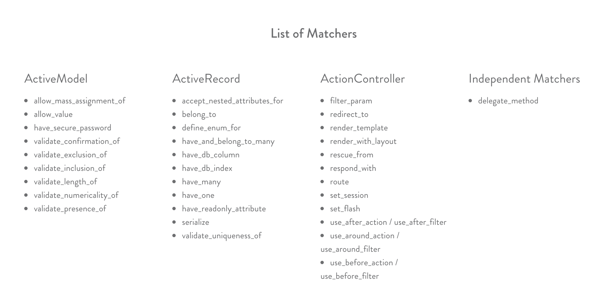
Now for an example. We define our validations in the model. The goal here is to ensure that a Resort Object can not be added to the database unless it meets the criteria defined in the validations.
We validate that each Resort Object has the presence of a name, image_path, trail_map_path, etc. Further, the name, image_path, and trail_map_path must be unique. This will prevent a user from loading multiple resorts with the same name.
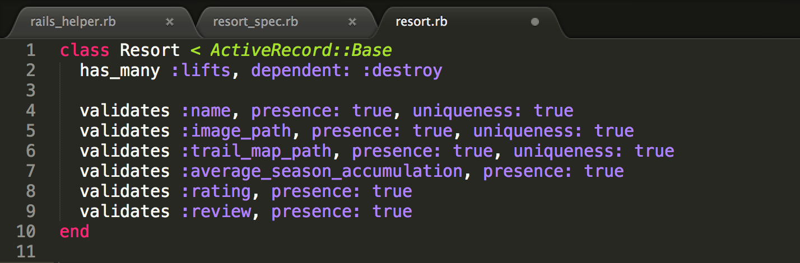
These validations are fantastic if they work, but we want to verify our verications with some tests. It would get very repetetive to write an RSpec test for each example, so shoulda-matchers allows a uniform, clear, and short format. The following example is boring because the tests all pass.
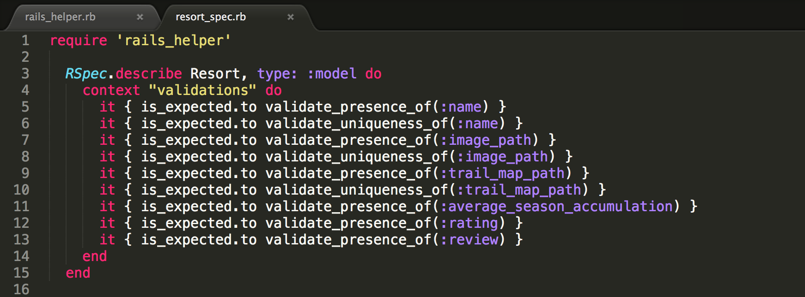
Now, the main event! If a Resort Object is created or updated, but doesn't meet these specifications, the test will fail and notify you of the missing or incorrect attribute.
In this example, I have added the has_many validation as well as a MiniTest example at the bottom. But more importantly, notice that we have a validation for :something_that_doesnt_exist. The test will fail because we are expecting a Resort Object to have this attribute. The error is apparent in the failed test in the second image.
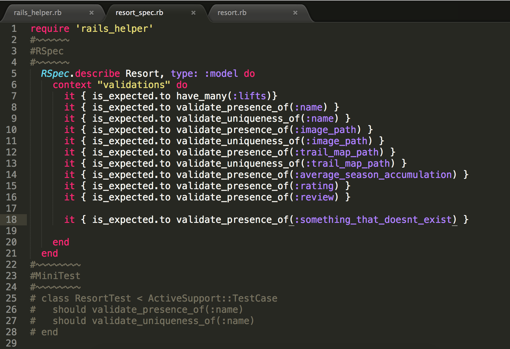
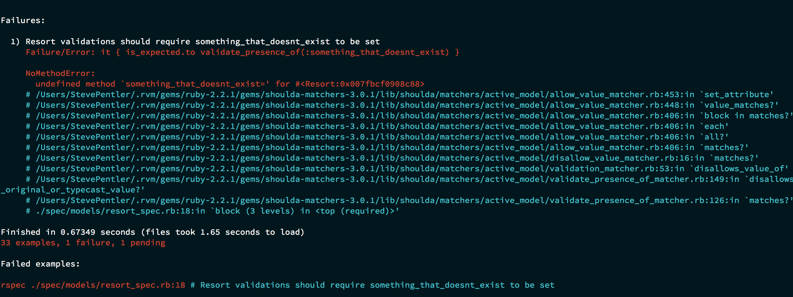
Shoot! You're getting an error like the one below! Your validations expect an error message.
(This is from a different application)
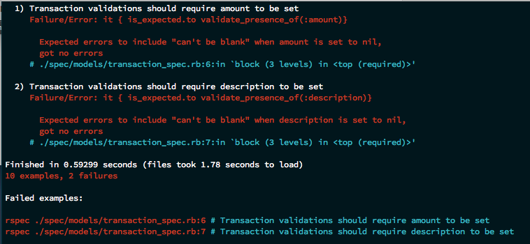
It puts up a fuss if you don't display error messages when necessary. I've found it best to display these errors directly to the views/layouts/application.html.erb file. This should help your test's pass if they are throwing
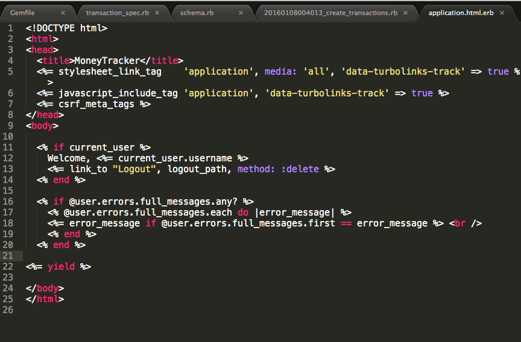
Installation: First, place gem 'shoulda-matchers' in the test environment of your Gemfile. Don'f forget to Bundle.
If you are using RSpec and ActiveRecord, head to your test_helper. Insert these lines of code in your test_helper.rb file.
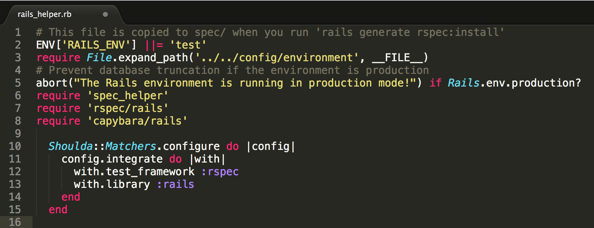
If you are using a different configuration, modify your configuration according to these specifications.
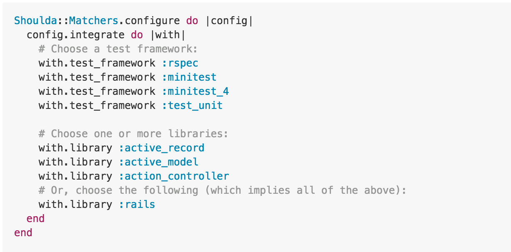